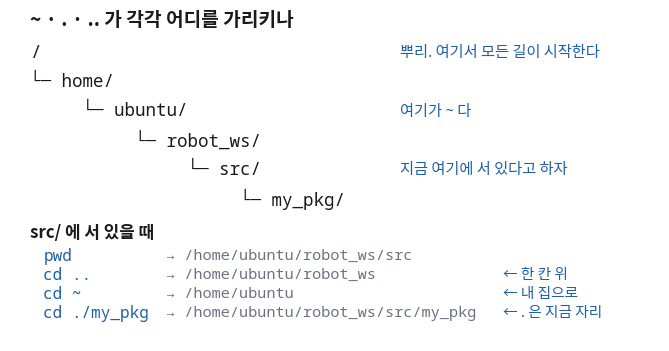

리눅스 명령어 — 알아야 할 것과 맡길 것
- 리눅스 명령어가 수백 개다. 그중 무엇을 외워야 하나?
- 에이전트가 만들어 준 스크립트를 실행했더니
Permission denied가 났다. 파일은 분명히 있다. 무슨 뜻인가? - 설치는 분명히 끝났는데, 새 터미널을 열면 그 명령어를 못 찾는다. 왜인가?
- 화면에 뜬 글자를 파일로 저장했는데 오류 메시지만 화면에 그대로 남는다. 왜인가?
- 프로그램이
Ctrl+C로 안 죽는다. 그다음에 무엇을 하나?
리눅스 명령어를 정리한 자료가 하나 있다. 537줄이고 명령어가 서른 개쯤 나온다. 그대로 읽으면 70분이 다 간다. 그리고 다음 주에 대부분 잊는다. 이 강의는 그 자료를 그대로 쓰지 않는다.
잊어도 되는 이유가 생겼기 때문이다. 명령어 사전은 이미 웹에 다 있고, 이제는 터미널 안에
에이전트가 앉아 있다. "이 폴더 아래에서 100MB 넘는 파일을 찾아 줘"라고 말하면
find의 옵션을 대신 조합해 준다.
옵션을 외우는 것은 이제 사람이 할 일이 아니다.
그래서 오늘은 명령어를 두 갈래로 가른다. 내가 알아야 하는 다섯 개와 맡기는 나머지 전부다. 다섯 개를 고른 기준은 하나다 — 몰라도 명령어는 쳐지지만, 모르면 학기 내내 같은 자리에서 막히는 것. 나머지는 오늘 안 배워도 학기가 끝날 때까지 한 번도 아쉽지 않다.
한 장 요약 — 왼쪽 다섯 줄만 내가 안다
무엇을 먼저 볼지: 가운데 「모르면 어디서 막히나」 열이 이 표의 알맹이다. 오른쪽 열은 외우지 않는다.
| 내가 알아야 하는 것 🔴 | 모르면 어디서 막히나 | 대신 맡기는 것 🟢 |
|---|---|---|
절대·상대경로 ~ . .. [판단] |
에이전트가 엉뚱한 폴더에 파일을 만들어도 알아채지 못한다 | find·grep·sed·awk 조합 |
파일 권한과 chmod +x [판단] |
스크립트가 Permission denied로 안 도는 이유를 못 짚는다 |
압축·복사·이름 일괄 변경 |
환경변수와 .bashrc·source [요구] |
"왜 새 터미널마다 source를 다시 하나"에서 학기 내내 막힌다 |
디스크 정리, 로그 필터링 |
표준 출력·오류와 파이프 | [판단] |
오류 메시지를 붙잡아서 질문에 붙여 넣을 줄 모른다 | 권한 숫자 조합(chmod 755) |
프로세스와 Ctrl+C [판단] |
프로그램이 안 죽을 때 그다음에 뭘 할지 모른다 | 사용자·그룹 관리 |
아래 출력은 전부 실제로 실행해서 얻은 것이다.
돌린 곳: 컨테이너(우분투 24.04.4 LTS, 사용자 이름 ubuntu).
그래서 경로가 /home/ubuntu/...로 찍힌다.
여러분의 WSL에서는 그 자리가 자기 계정 이름으로 바뀔 뿐 모양은 똑같다.
① 내가 어디 서 있는지 모르면 명령이 엉뚱한 곳에 떨어진다 🔴 사람이 한다
무엇이 궁금한가
에이전트에게 "작업 폴더 만들어 줘"라고 시켰다. "완료했습니다"라는 답이 왔다. 그런데 그 폴더가 어디에 생겼는지는 답에 없다. 터미널은 언제나 어느 한 폴더 안에 서 있는 상태이고, 모든 명령은 그 자리를 기준으로 실행된다. 그러니 첫 질문은 언제나 같다 — "나는 지금 어디에 서 있나."
그때 이걸 친다
$ pwd출력을 이렇게 읽는다
/home/ubuntu/robot_ws
빗금(/)으로 시작하는 이 한 줄이 절대경로다.
뿌리(/)에서부터 지금 자리까지의 전체 길이라서, 어디서 읽어도 뜻이 하나뿐이다.
자료에 경로를 적거나 남에게 알려 줄 때는 언제나 이 모양으로 준다.

~는 /home/ubuntu 한 자리를 가리키는 별명이라는 것을 본다.절대경로 말고 지금 자리에서 몇 칸 움직이라고 말하는 방법이 있다. 상대경로다.
$ pwd
/home/ubuntu/robot_ws/src/my_pkg
$ cd .. && pwd
/home/ubuntu/robot_ws/src
$ cd ../.. && pwd
/home/ubuntu/robot_ws
$ echo ~
/home/ubuntu무엇을 먼저 볼지: 가운데 열만 읽으면 된다. 오른쪽은 위 출력에서 대조할 자리다.
| 기호 | 가리키는 곳 | 위 출력에서 |
|---|---|---|
/ | 뿌리. 이 컴퓨터의 모든 길이 시작하는 자리 | 모든 줄의 맨 앞 글자 |
~ | 내 집(홈) 폴더. 계정마다 하나씩 있다 | echo ~ → /home/ubuntu |
. | 지금 서 있는 자리 그 자체 | ./hello.sh의 앞 두 글자 (다음 절) |
.. | 한 칸 위 폴더 | cd .. → src로 올라갔다 |
../.. | 두 칸 위. 점 두 개를 빗금으로 이어 붙인다 | cd ../.. → robot_ws |
~가 특히 중요하다.
설치 안내에 ~/robot_ws라고 적혀 있으면 그건 내 계정 홈 아래의 robot_ws라는 뜻이다.
사람마다 실제 경로가 다른데도 같은 문장으로 안내할 수 있는 이유가 이것이다.
그리고 이 별명은 다음 절의 「환경변수」와 같은 원리로 만들어져 있다.
에이전트에게 시키면 🤖
마지막 문장이 핵심이다. "어디에 만들었는지 같이 알려 줘"를 요구하지 않으면 에이전트는 "완료했습니다"만 말한다. 그 답에는 확인할 것이 하나도 들어 있지 않다.
② Permission denied는 파일이 없다는 뜻이 아니다 🟢 맡긴다
무엇이 궁금한가
에이전트가 설치 스크립트를 하나 만들어 줬다. 파일은 눈에 보인다. 그런데 실행하면 이렇게 나온다. 파일이 없다는 것도 아니고, 문법이 틀렸다는 것도 아니다. 그러면 무엇인가.
그때 이걸 친다
$ ls -l hello.sh출력을 이렇게 읽는다
$ ls -l hello.sh
-rw-r--r-- 1 ubuntu ubuntu 50 Aug 28 07:19 hello.sh
$ ./hello.sh
/work/l04_linux_cmd/demo.sh: line 27: ./hello.sh: Permission denied
(종료 코드 126)
맨 앞의 열 글자만 본다. -rw-r--r--다.
이 열 글자가 "이 파일로 무엇을 해도 되는가"를 적어 둔 자리다.
x라는 글자가 한 개도 없다는 것이 지금 문제다.
| 자리 | 글자 | 뜻 |
|---|---|---|
| 1번째 | - | 보통 파일이다. 폴더면 여기가 d가 된다 |
| 2~4번째 | rw- | 주인이 할 수 있는 것 — 읽기(r)·쓰기(w)·실행(x) 없음 |
| 5~7번째 | r-- | 같은 그룹인 사람 — 읽기만 |
| 8~10번째 | r-- | 나머지 모든 사람 — 읽기만 |
.sh가 붙었다고 실행되는 게 아니다. 열 글자 중 x가 켜져 있어야 실행된다.
윈도우에서 .exe면 무조건 실행되던 것과 다른 지점이 여기다.
x를 켜고 다시 실행하면 이렇게 달라진다.
$ chmod +x hello.sh && ls -l hello.sh
-rwxr-xr-x 1 ubuntu ubuntu 50 Aug 28 07:19 hello.sh
$ ./hello.sh
안녕, 나는 스크립트다
-rw-r--r--가 -rwxr-xr-x로 바뀌었다.
x가 세 자리에 켜졌고, 그러자 같은 명령이 그대로 돌았다.
파일 내용은 한 글자도 안 고쳤다.
🆕 이 출력에서 처음 나오는 것
- ls -l
- 파일 목록을 한 줄에 하나씩, 자세히 보여 준다.
여기서는 맨 앞 열 글자(권한)를 보려고 썼다.
-l이 없으면 이름만 나온다. - chmod +x 파일이름
- 그 파일에 실행 권한(x)을 켠다(change mode).
여기서는
-rw-r--r--를-rwxr-xr-x로 바꾸는 데 썼다. - ./hello.sh
- 앞의
./는 "지금 이 폴더에 있는"이라는 뜻이다. 이걸 빼고hello.sh라고만 치면 리눅스는 정해진 설치 폴더들만 뒤지고 못 찾는다. - $? (종료 코드)
- 방금 끝난 명령이 성공했는지 실패했는지를 담고 있는 값이다.
0이면 성공, 0이 아니면 실패다. 위 출력의
126이 그 값이다.
종료 코드는 눈으로 볼 수 있다. 실패한 명령마다 숫자가 다르다.
$ ls hello.sh > /dev/null ; echo $?
0
$ ls no_such_file > /dev/null 2>&1 ; echo $?
2
$ hello.sh ; echo $? # 그런 명령이 없다
127| 값 | 뜻 | 이럴 때 나온다 |
|---|---|---|
0 | 성공. 0만 성공이다 | 정상 종료 |
2 | 명령은 돌았는데 대상이 없거나 인자가 틀렸다 | 없는 파일을 ls했다 |
126 | 찾긴 찾았는데 실행할 수 없다 | 바로 위의 Permission denied |
127 | 그런 명령 자체가 없다 | 오타이거나, 설치가 안 됐거나, 경로에 없다 |
126과 127을 구별할 줄 아는 것이 이 절의 전부다.
126은 권한 문제(파일은 있다), 127은 존재 문제(파일을 못 찾았다)다.
이 둘을 바꿔 짚으면 엉뚱한 것을 몇십 분 고치게 된다.
에이전트에게 시키면 🤖
ls -l 결과를 둘 다 보여 줘.
"고치기 전과 후를 둘 다 보여 줘"가 이 프롬프트의 값어치다. 두 줄을 나란히 받으면 무엇이 달라졌는지 내가 눈으로 확인할 수 있다. 그 요구가 없으면 "권한 문제였습니다. 해결했습니다"로 끝난다.
③ 환경변수를 모르면 source를 영원히 이해하지 못한다 🔴 사람이 한다
오늘 나오는 다섯 개 중 이 절 하나가 나머지 넷을 합친 것보다 중요하다.
16회부터 30회까지, 새 터미널을 열 때마다
source install/setup.bash라는 한 줄을 다시 치게 된다.
그 줄이 왜 필요한지는 지금 이 절을 모르면 학기가 끝날 때까지 이해할 수 없다.
"그냥 외워서 치는 주문"으로 남고, 안 될 때마다 원인을 못 짚는다.
무엇이 궁금한가
터미널에서 값을 하나 정해 놓았는데, 다른 터미널에서는 그 값이 없다. 분명히 방금 정했는데도 그렇다. 무엇이 어디까지 전해지는 것인가.
그때 이걸 친다
$ export MY_ROBOT=burger
$ echo $MY_ROBOT출력을 이렇게 읽는다
$ echo $MY_ROBOT
$ export MY_ROBOT=burger
$ echo $MY_ROBOT
burger
$ bash -c 'echo $MY_ROBOT' # 자식 셸
burger
$ env -u MY_ROBOT bash -c 'echo "[$MY_ROBOT]"' # 물려받지 않은 셸
[]
세 번째 줄과 마지막 줄을 나란히 본다.
같은 이름을 물었는데 하나는 burger가 나오고 하나는 빈칸([])이 나왔다.
차이는 그 셸이 값을 물려받았는가 하나뿐이다.
export가 하는 일은 "이 값을 앞으로 여기서 띄우는 프로그램들에게도 넘겨라"고 표시하는 것이다.
그래서 값은 아래로만 흐른다. 옆 터미널로도, 이미 떠 있던 프로그램으로도 가지 않는다.

[ ]와 [LDS-02]가 이 회차에서 가장 자주 만나는 차이다.
그림 아래쪽이 실제로 어떻게 나오는지 보자.
setenv.sh는 export MY_LIDAR=LDS-02 한 줄만 들어 있는 파일이다.
$ bash setenv.sh && echo "[$MY_LIDAR]"
[]
$ source setenv.sh && echo "[$MY_LIDAR]"
[LDS-02]bash setenv.sh는 새 셸을 하나 띄워서 그 안에서 값을 정하고, 그 셸이 끝나면서 값도 같이 사라진다.
값은 아래로만 흐르므로 나에게 올라오지 않는다.
source setenv.sh는 새 셸을 만들지 않는다. 지금 이 셸이 그 파일을 직접 읽어 자기 안에 값을 만든다. 그래서 남는다.
🆕 이 출력에서 처음 나오는 것
- export 이름=값
- 값을 정하면서 "여기서 띄우는 프로그램에게도 넘겨라"고 표시한다.
여기서는
MY_ROBOT이 자식 셸까지 따라가는 것을 보이는 데 썼다. - $이름
- 이름 앞의
$는 "그 이름에 담긴 값을 꺼내라"는 뜻이다.echo $MY_ROBOT은 이름이 아니라 값을 찍는다. - source 파일
- 그 파일을 지금 이 셸이 직접 읽어서 실행한다. 새 셸을 띄우지 않는다.
여기서는
MY_LIDAR가 내 터미널에 남게 하는 데 썼다. 점 하나(. setenv.sh)로도 같은 일을 한다. - bash -c '명령'
- 새 셸을 하나 띄워 따옴표 안을 실행하고 끝낸다. 여기서는 자식 셸에서도 값이 보이는지 확인하는 데 썼다.
- env -u 이름 명령
- 그 이름 하나만 빼고 명령을 실행한다. 여기서는 물려받지 못한 셸이 어떻게 보이는지(빈칸) 만들어 보이는 데 썼다.
.bashrc — 새 터미널이 열릴 때마다 자동으로 읽히는 파일
값이 아래로만 흐른다면, 새 터미널마다 매번 다시 정해야 한다.
그 반복을 없애는 자리가 .bashrc다. 홈 폴더에 있는 그냥 글자 파일이고,
새 터미널이 열릴 때 셸이 이 파일을 스스로 source한다.
$ tail -n 2 ~/.bashrc
source /opt/ros/jazzy/setup.bash
[ -f /work/install/setup.bash ] && source /work/install/setup.bash
$ echo 'export MY_LIDAR=LDS-02' >> ~/.bashrc
$ echo "[$MY_LIDAR]" # 지금 이 터미널에는 아직 없다
[]
$ bash -i -c 'echo "[$MY_LIDAR]"' # 새 터미널을 연 것과 같다
[LDS-02].bashrc는 다음에 열릴 터미널부터 효력이 있다.
그래서 설정을 바꾼 뒤에는 새 터미널을 열거나 source ~/.bashrc를 한 번 해 줘야 한다.
"적었는데 왜 안 되지"의 절반이 이 줄에서 갈린다.
그러면 source는 대체 무엇을 바꾸는가.
가장 많이 바뀌는 것이 PATH다.
PATH는 "명령어를 어느 폴더들에서 찾을지" 적어 둔 환경변수다.
아래는 같은 터미널에서 source 한 줄을 사이에 두고 찍은 것이다.
$ which ros2
(아무것도 안 나온다)
$ echo $PATH
/usr/local/sbin:/usr/local/bin:/usr/sbin:/usr/bin:/sbin:/bin
$ source /opt/ros/jazzy/setup.bash
$ which ros2
/opt/ros/jazzy/bin/ros2
$ echo $PATH
/opt/ros/jazzy/bin:/usr/local/sbin:/usr/local/bin:/usr/sbin:/usr/bin:/sbin:/bin
$ printenv | grep ROS | sort
ROS_AUTOMATIC_DISCOVERY_RANGE=SUBNET
ROS_DISTRO=jazzy
ROS_DOMAIN_ID=30
ROS_PYTHON_VERSION=3
ROS_VERSION=2
PATH 맨 앞에 /opt/ros/jazzy/bin 한 칸이 늘었다.
그것 하나 때문에 조금 전까지 "없는 명령"이던 것이 지금은 찾아진다.
프로그램이 새로 설치된 것이 아니다. 파일은 처음부터 그 자리에 있었다.
달라진 것은 내 터미널이 그 폴더를 뒤지게 됐다는 것뿐이다.
🆕 이 출력에서 처음 나오는 것
- PATH
- 명령어를 어느 폴더들에서 찾을지 콜론(
:)으로 이어 적어 둔 환경변수다. 여기서는 앞에 한 칸이 늘어난 것을 보이는 데 썼다. - which 이름
- 그 명령이 실제로 어느 파일인지 경로로 알려 준다.
여기서는
source전에는 못 찾고 후에는 찾는 것을 보이는 데 썼다. - printenv
- 지금 이 셸이 가진 환경변수를 전부 이름=값 꼴로 쏟아 낸다.
여기서는 뒤에
grep ROS를 붙여 이름에 ROS가 든 것만 골라 봤다.
제대로 다루는 곳: 16회(ROS 2 설치와 작업공간)
에이전트에게 "환경변수 설정해 줘"라고 시키면 에이전트는 자기가 띄운 셸에서 export를 한다.
값은 아래로만 흐르므로 그 값은 내 터미널로 올라오지 않는다.
에이전트는 "설정했습니다"라고 말하고, 나는 echo를 쳐도 빈칸을 본다. 둘 다 틀리지 않았다.
그래서 이렇게 요구한다.
~/.bashrc 끝에 추가해 줘. 추가한 줄을 그대로 보여 주고, 새 터미널에서 값이 보이는지 확인하는 명령도 알려 줘. 파일을 고치기 전에 무엇을 넣을지 먼저 보여 줘.
마지막 문장("고치기 전에 먼저 보여 줘")을 빼지 마라.
.bashrc가 망가지면 새 터미널이 열릴 때마다 오류가 뜬다.
되돌리기는 어렵지 않지만, 그때 원인을 못 짚으면 하루가 간다.
④ 명령어는 관을 두 개 갖고 있다 🟡 맡기되 검사
무엇이 궁금한가
빌드 결과를 파일로 저장해 두려고 > log.txt를 붙였다.
그런데 정작 보고 싶던 오류 메시지만 화면에 그대로 남고 파일에는 안 들어갔다.
저장이 안 된 것도 아닌데 왜 반쪽만 갔는가.
그때 이걸 친다
$ ls hello.sh no_such_file출력을 이렇게 읽는다
$ ls hello.sh no_such_file
ls: cannot access 'no_such_file'hello.sh
: No such file or directory
이 출력은 오타가 아니다. 한 줄이 중간에 끊기고 다른 문장이 끼어들어 있다.
hello.sh라는 글자가 'no_such_file'과 : No such file... 사이에 박혔다.
두 문장이 서로 다른 관을 타고 나와서 화면에서 뒤섞인 것이다.
한 관으로 나왔다면 이렇게 겹칠 수가 없다. 관이 두 개라는 가장 확실한 증거다.

$ ls hello.sh no_such_file 1> out.txt # 1(출력)만 파일로
ls: cannot access 'no_such_file': No such file or directory
$ cat out.txt
hello.sh
$ ls hello.sh no_such_file > all.txt 2>&1 # 2(오류)도 1 쪽으로
$ cat all.txt
ls: cannot access 'no_such_file': No such file or directory
hello.sh
첫 번째 명령에서는 오류 문장이 화면에 그대로 남았다. 파일에는 hello.sh만 들어갔다.
두 번째 명령에서는 화면에 아무것도 안 남았고 파일 안에 두 문장이 다 들어갔다.
바뀐 것은 2>&1 네 글자뿐이다.
🆕 이 출력에서 처음 나오는 것
- 1 과 2 (관 번호)
- 1번은 표준 출력(정상 결과), 2번은 표준 오류(오류 메시지)다.
번호를 안 쓰면
1로 친다.> out.txt는1> out.txt와 같은 뜻이다. - > 파일
- 그 관을 화면 대신 파일로 돌린다. 파일에 원래 있던 내용은 지워진다.
지우지 않고 뒤에 이어 붙이려면
>>를 쓴다. - 2>&1
- "2번 관을 1번 관이 지금 가는 곳으로 같이 보내라"는 뜻이다.
여기서는 오류까지
all.txt에 담는 데 썼다. 순서가 중요하다 —> all.txt를 먼저 쓰고2>&1을 뒤에 붙인다. - |
- 앞 명령의 1번 관을 뒤 명령의 입력으로 꽂는다(파이프). 파일을 거치지 않고 바로 넘긴다. 바로 아래에서 쓴다.
관은 파일로만 보내는 게 아니라 다음 명령에 바로 꽂을 수도 있다.
아래는 sensors.txt에서 lidar가 들어간 줄만 골라 그 개수를 센 것이다.
$ cat sensors.txt | grep lidar | wc -l
2| 토막 | 하는 일 | 다음으로 넘기는 것 |
|---|---|---|
cat sensors.txt | 파일 내용을 1번 관으로 쏟는다 | 줄 네 개 |
grep lidar | 받은 줄 중 lidar가 든 줄만 통과시킨다 | 줄 두 개 |
wc -l | 받은 줄 수를 센다 | 숫자 2 |
에이전트에게 시키면 🤖
이 프롬프트가 질문할 때 붙일 오류 메시지를 만들어 준다. 오류 메시지 없이 "안 돼요"라고 물으면 에이전트도 사람도 짐작만 한다. 붙여 넣을 글자를 확보하는 것이 이 절의 실용적인 목적이다.
⑤ Ctrl+C가 보내는 것은 전원 스위치가 아니라 신호다 🔴 사람이 한다
무엇이 궁금한가
돌고 있는 프로그램을 멈추려고 Ctrl+C를 눌렀다.
대부분은 잘 멈추는데, 가끔 안 멈춘다.
그때 무엇을 더 할 수 있는지 알려면 Ctrl+C가 정확히 무엇을 하는지부터 알아야 한다.
그때 이걸 친다
$ ps -o pid=,stat=,cmd= -p 38출력을 이렇게 읽는다
일하는 중... (PID 38)
$ ps -o pid=,stat=,cmd= -p 38
38 S ./worker
$ kill -INT 38 # Ctrl+C 를 누른 것과 똑같은 신호다
[INT 신호를 받았다 → 파일을 닫고 정상 종료한다]
$ ps -p 38
→ 프로세스가 사라졌다
가운데 두 줄이 이 절의 전부다.
kill -INT 38을 쳤더니 프로그램이 "신호를 받았다 → 파일을 닫고 정상 종료한다"는 문장을 스스로 찍고 나갔다.
Ctrl+C는 프로그램을 끄는 것이 아니라, 프로그램에게 「그만해 달라」는 신호를 보내는 것이다.
그 신호의 이름이 INT다. 받은 프로그램은 정리할 기회를 한 번 얻는다 —
열어 둔 파일을 닫고, 바퀴에 정지 명령을 보내고, 그다음에 나간다.
🆕 이 출력에서 처음 나오는 것
- PID
- 지금 돌고 있는 프로그램마다 하나씩 붙는 번호표(process id)다.
이름이 아니라 번호로 지목해야 같은 이름이 여럿일 때 헷갈리지 않는다. 위 출력의
38이 그것이다. - ps -p 번호
- 그 번호표를 단 프로그램이 아직 살아 있는지 보여 준다. 여기서는 신호를 보내기 전과 후에 각각 쳐서 사라졌음을 확인하는 데 썼다.
- kill -INT 번호
- 그 번호표에게 INT 신호를 보낸다.
이름이
kill이지만 죽이는 명령이 아니라 신호를 보내는 명령이다.Ctrl+C와 같은 것을 손으로 보낸 것이다.
그러면 신호를 무시하는 프로그램은 어떻게 하나. 정리할 기회를 주지 않는 신호가 따로 있다.
일하는 중... (PID 71)
$ kill -9 71 # 정리 없이 즉시 끝낸다
$ ps -p 71
→ 프로세스가 사라졌다 (정리 메시지가 안 찍혔다)kill -INT와 정확히 한 줄이 다르다 —
"[INT 신호를 받았다 → 파일을 닫고 정상 종료한다]"가 안 찍혔다.
프로그램이 게을러서가 아니라 그 코드가 실행될 틈 자체가 없었기 때문이다.
-9는 프로그램에게 전달되지 않고 운영체제가 곧바로 끊어 버린다.
| 보내는 것 | 같은 것 | 프로그램이 정리할 수 있나 | 언제 쓰나 |
|---|---|---|---|
kill -INT | Ctrl+C | 있다 | 언제나 여기부터. 기본값이다 |
kill (번호만) | TERM 신호 | 있다 | 터미널을 이미 닫아 Ctrl+C를 못 누를 때 |
kill -9 | KILL 신호 | 없다 | 앞의 둘이 안 먹을 때만. 마지막 수단 |
kill -9를 먼저 쓰지 않는다
로봇을 움직이는 프로그램은 끝날 때 바퀴에 「정지」를 한 번 보내고 나가도록 짜여 있다.
-9는 그 줄을 실행시키지 않는다.
화면의 프로그램은 사라지는데 로봇은 마지막 속도로 계속 간다.
순서를 지킨다. Ctrl+C → 몇 초 기다린다 → 안 되면 kill → 그래도 안 되면 kill -9.
실물 로봇을 다루는 27회 이후로는 이 순서가 안전 수칙이 된다.
에이전트에게 시키면 🤖
"종료는 하지 말고"를 반드시 넣는다. 프로세스를 정리하라고 뭉뚱그려 시키면 내가 쓰던 다른 창까지 같이 닫힌다. 무엇을 끌지는 목록을 보고 사람이 고른다.
⑥ 나머지 수백 개는 문장으로 시키고 결과만 확인한다 🟢 맡긴다
여기까지가 내가 아는 다섯 개다. 나머지는 전부 맡긴다. 맡길 때 필요한 것은 명령어가 아니라 「무엇을 확인할 것인가」 한 줄이다.
무엇을 먼저 볼지: 오른쪽 「내가 확인하는 것」 열이다. 이 열이 비어 있으면 그 일은 맡긴 것이 아니라 던진 것이다.
| 하고 싶은 일 | 이렇게 시킨다 🤖 | 내가 확인하는 것 ✅ |
|---|---|---|
| 큰 파일 찾기 | "이 폴더 아래에서 100MB 넘는 파일을 큰 것부터 열 개만 표로 보여 줘" | 표에 절대경로와 크기가 같이 있나 |
| 로그에서 원인 줄만 보기 | "이 로그에서 error 와 warning 이 든 줄만 앞뒤 두 줄과 같이 뽑아 줘" | 뽑힌 줄이 원본에도 그대로 있나 |
| 파일 이름 일괄 변경 | "확장자가 .txt 인 파일 이름 앞에 날짜를 붙여 줘. 바꾸기 전에 바뀔 목록을 먼저 보여 줘" | 목록을 내가 보고 승인했나 |
| 디스크 정리 | "용량을 많이 쓰는 폴더 순서로 보여 줘. 지우지는 마" | 지울 것을 내가 골랐나 |
| 설치 | "이 도구를 설치해 줘. sudo가 붙는 명령은 실행 전에 보여 줘" |
설치 뒤 which로 경로가 나오나 |
sudo) 앞에 이 한 마디를 붙이는 것이
이 강의에서 요구하는 사용법이다.
에이전트에게 "잘 됐는지 확인해 줘"라고 하면 "완료했습니다"라는 답이 온다.
그 문장은 정보가 아니다. 위 표의 오른쪽 열은 전부
내가 눈으로 볼 수 있는 것으로만 적혀 있다 —
경로가 찍혔나, 목록이 나왔나, which가 경로를 뱉나.
눈으로 볼 수 없는 확인 항목은 확인 항목이 아니다.
sudo가 붙는 명령을 실행하기 전에는 항상 나에게 먼저 보여 주고 승인을 받아 줘. 그리고 작업이 끝나면 "완료" 대신 내가 직접 쳐서 확인할 수 있는 명령 한 줄을 알려 줘.
알게 되는 것: 위 출력들이 내 컴퓨터에서도 똑같이 나온다는 것. 그리고 마지막 단계에서 새 터미널을 열어도 되는 상태가 무엇인지 몸으로 안다.
준비물: WSL 터미널 하나. (중간에 두 번째 터미널을 새로 연다) 로봇도 ROS도 필요 없다.
절차
-
어디 서 있는지 확인하고 작업 폴더를 만든다. (3분)
pwd를 치고 나온 절대경로를 적어 둔다.mkdir -p ~/robot_ws/src/my_pkg로 폴더를 만든 뒤cd ~/robot_ws/src/my_pkg로 들어가서pwd를 다시 친다. 두 경로가 어떻게 달라졌는지를 본다. -
실행 권한이 없는 상태를 일부러 만들어 본다. (5분)
echo 'echo 안녕' > hello.sh로 파일을 만들고./hello.sh를 친다.Permission denied가 나오는 것이 정상이다. 이어서echo $?로 126을 확인하고,chmod +x hello.sh뒤에 다시 실행한다.ls -l로 글자가 어떻게 바뀌었는지 대조한다. -
bash와source의 차이를 직접 만든다. (7분)
echo 'export MY_LIDAR=LDS-02' > setenv.sh로 파일을 만든다.bash setenv.sh뒤에echo "[$MY_LIDAR]"→ 빈칸.source setenv.sh뒤에 같은 것을 친다 →[LDS-02]. 두 결과가 다르게 나올 때까지 이 단계를 넘어가지 않는다. -
새 터미널을 하나 더 연다. (3분)
새 창에서echo "[$MY_LIDAR]"를 친다. 빈칸이 나온다. 값이 옆 창으로는 가지 않는다는 것을 눈으로 확인하는 단계다. -
.bashrc에 적고 다시 새 터미널을 연다. (5분)
echo 'export MY_LIDAR=LDS-02' >> ~/.bashrc를 치고, 또 새 터미널을 하나 더 열어echo "[$MY_LIDAR]"를 친다. 이번에는[LDS-02]가 나와야 한다. -
관 두 개를 갈라 본다. (4분)
ls hello.sh no_such_file > out.txt를 치면 오류만 화면에 남는다.cat out.txt로 파일에는 무엇이 들어갔는지 본다. 이어서ls hello.sh no_such_file > all.txt 2>&1과cat all.txt를 친다. -
신호를 두 가지 방법으로 보낸다. (4분)
먼저sleep 300을 그냥 친다. 터미널이 멈춘 것처럼 보인다.Ctrl+C를 누르면 프롬프트가 돌아온다 — 방금 INT 신호를 보낸 것이다.
이번에는sleep 300 &로 뒤로 보낸다. 번호(PID)가 화면에 찍힌다.ps -p 그번호로 살아 있음을 확인하고,kill 그번호를 보낸 뒤ps -p 그번호를 다시 친다. 제목 줄만 남고 그 아래가 비면 사라진 것이다.
이렇게 되면 성공이다 — 성공 판정은 단 하나다.
지금 창을 닫고 새 터미널을 열어도 echo "[$MY_LIDAR]"가 [LDS-02]를 낸다.
이것이 되면 5단계까지 제대로 통과한 것이고, 안 되면 .bashrc에 줄이 안 들어간 것이다.
(tail -n 3 ~/.bashrc로 확인한다)
source setenv.sh인데도 빈칸이 나온다면 파일 안에 export가 빠졌을 가능성이 높다.
MY_LIDAR=LDS-02라고만 적으면 그 값은 지금 셸 안에만 있고 아래로 흐르지 않는다.
cat setenv.sh로 파일 내용부터 확인한다.
📝 HW1 — 시킨 것이 아니라 확인한 것을 낸다 🔴 사람이 한다
지금까지 이런 과제는 명령어를 쳐서 화면을 캡처해 내는 것이었다. 이제 명령어는 에이전트가 친다. 그래서 내는 것을 바꾼다.
에이전트에게 환경 작업을 시키고, 내가 무엇을 어떻게 검증했는지를 적어서 낸다.
작업 자체는 아무거나 골라도 된다 — 작업 폴더 만들기, 도구 하나 설치하기,
.bashrc에 줄 넣기, 스크립트 하나 만들어 실행 권한 주기 중에서 고른다.
무엇을 먼저 볼지: 셋째 줄이다. 배점이 거기 몰려 있다.
| 제출물 | 무엇을 쓰나 | 배점 |
|---|---|---|
| ① 시킨 프롬프트 원문 | 고쳐 쓰지 말고 실제로 보낸 문장 그대로. 여러 번 고쳐 시켰으면 전부 | 낮다 |
| ② 에이전트가 한 일 요약 | 어떤 명령을 실행했고 어떤 파일을 고쳤는지 세 줄 이내 | 낮다 |
| ③ 내가 확인한 것과 그 결과 | 내가 직접 친 확인 명령과 그때 나온 출력을 짝지어 적는다. "잘 됐음"은 답이 아니다. 화면에 나온 글자를 적는다 | 여기가 대부분이다 |
| ④ 에이전트가 틀렸거나 빠뜨린 것 | 있으면 무엇을 보고 알았는지까지. 없으면 "없었다"라고 적으면 된다 | 가점 |
③에 적을 확인 명령의 예는 이렇게 고른다. 전부 오늘 나온 것이다.
| 시킨 일 | 내가 치는 확인 명령 | 이렇게 나오면 통과 |
|---|---|---|
| 폴더를 만들어 달라 | ls -l ~/robot_ws | 만든 폴더가 절대경로 아래에 보인다 |
| 스크립트를 만들어 달라 | ls -l 파일이름 뒤 실행 | 앞 열 글자에 x가 있고 $?가 0 |
| 도구를 설치해 달라 | which 도구이름 | 경로가 한 줄 나온다 (빈칸이면 실패) |
| 환경변수를 넣어 달라 | 새 터미널에서 echo $이름 | 값이 나온다 |
| 로그를 정리해 달라 | wc -l 파일, head 파일 | 줄 수와 첫 줄이 원본과 맞는다 |
🤖 오늘 나온 프롬프트 모음
무엇을 먼저 볼지: 오른쪽 문장에서 「먼저 보여 줘」와 「확인 명령을 알려 줘」가 어디에 붙었는지 본다.
| 이럴 때 | 이렇게 말한다 |
|---|---|
| 파일을 만들게 할 때 | "어디에 만들었는지 절대경로로 같이 알려 줘." |
| 스크립트가 안 돌 때 | "원인을 알려 주고 고쳐 줘. 고치기 전과 후의 ls -l을 둘 다 보여 줘." |
| 환경 설정을 시킬 때 | "지금 셸에서만 하지 말고 ~/.bashrc에 넣어 줘. 넣기 전에 넣을 줄을 먼저 보여 줘." |
| 오류가 났을 때 | "출력과 오류를 한 파일에 저장하고, error·warning 줄만 뽑아 줘." |
| 프로세스를 볼 때 | "PID·상태·명령어를 표로 보여 줘. 종료는 하지 마." |
| 지우거나 덮어쓸 때 | "바꾸기 전에 바뀔 목록을 먼저 보여 줘." |
| 일이 끝났을 때 | "'완료' 대신 내가 직접 칠 확인 명령을 알려 줘." |
✅ 오늘의 점검
조금 더 알아두면 시험 범위 아님
아래는 학기 중에 한 번쯤 마주치는 것들이다. 외울 필요는 없고, 눈에 익혀 두면 그 자리에서 당황하지 않는다. 시험에는 나오지 않는다.
권한을 숫자로 쓰는 법 — chmod 755가 무슨 뜻인가
설치 안내에서 chmod 755나 chmod 644를 자주 본다.
숫자 세 개는 각각 주인·그룹·나머지이고, 각 자리는 읽기 4 + 쓰기 2 + 실행 1을 더한 값이다.
| 숫자 | 글자로 쓰면 | 뜻 |
|---|---|---|
755 | rwxr-xr-x | 주인은 다 되고, 나머지는 읽고 실행만. 스크립트의 기본 |
644 | rw-r--r-- | 주인만 고칠 수 있는 보통 글자 파일 |
777 | rwxrwxrwx | 누구나 다 됨. 안 될 때 이걸 주고 넘어가는 습관을 들이지 마라 |
chmod +x는 지금 권한에 실행만 얹는 것이라 훨씬 안전하다.
숫자는 지금 있는 권한을 통째로 갈아엎는다. 그래서 이 강의에서는 +x만 쓴다.
목록을 볼 때 자주 쓰는 옵션 넷
| 이렇게 친다 | 무엇이 달라지나 |
|---|---|
ls -a | 점으로 시작하는 파일까지 보인다. .bashrc가 평소에 안 보이던 이유가 이것이다 |
ls -lh | 크기를 4.0K·1.2M처럼 사람이 읽는 단위로 바꾼다 |
ls -lt | 최근에 고친 것부터 정렬한다. "방금 만든 게 뭐였지"에 쓴다 |
ls ~/robot_ws | 지금 자리를 옮기지 않고 다른 폴더 안을 들여다본다 |
돌고 있는 것을 다루는 세 가지 — &, Ctrl+Z, tail -f
| 이렇게 친다 | 무슨 일이 나나 | 되돌리려면 |
|---|---|---|
명령 뒤에 & | 뒤로 보내고 터미널을 계속 쓴다. PID가 찍힌다 | kill에 그 PID를 쓴다 |
Ctrl+Z | 돌던 것을 잠시 멈춰 세운다. 끝난 게 아니다 | fg로 다시 앞으로 부른다 |
tail -f 파일 | 로그 파일에 새 줄이 붙는 것을 계속 지켜본다 | Ctrl+C로 나온다 |
Ctrl+Z를 Ctrl+C인 줄 알고 누르는 실수가 흔하다.
화면은 돌아왔는데 프로그램은 멈춘 채 살아 있다.
"분명히 껐는데 포트를 잡고 있다"는 상황의 대부분이 이것이다. fg로 불러서 Ctrl+C로 제대로 끝낸다.
>와 >>는 한 글자 차이로 결과가 정반대다
>는 덮어쓴다. 원래 있던 내용은 그 순간 사라진다.
>>는 뒤에 이어 붙인다.
.bashrc를 다룰 때 이 한 글자가 특히 위험하다.
echo '...' > ~/.bashrc라고 치면 원래 있던 설정이 통째로 날아간다.
항상 >>인지 눈으로 확인하고 엔터를 친다.
에이전트에게 시킬 때 "고치기 전에 보여 줘"를 붙이는 이유가 이런 자리다.
셸이 읽는 파일이 .bashrc 말고도 있다
| 파일 | 언제 읽히나 | 이 강의에서는 |
|---|---|---|
~/.bashrc | 터미널 창을 열 때마다 | 여기만 쓴다. 설정은 전부 여기 |
~/.profile | 계정에 로그인할 때 한 번 | 건드리지 않는다 |
/etc/environment | 컴퓨터 전체 · 모든 계정 | 건드리지 않는다. 잘못 고치면 로그인이 막힌다 |
안내 문서마다 어디에 넣으라고 하는지가 조금씩 다르다.
이 강의에서는 전부 ~/.bashrc 하나로 통일한다.
여러 군데 흩어 놓으면 나중에 무엇이 어디서 켜졌는지 못 찾는다.